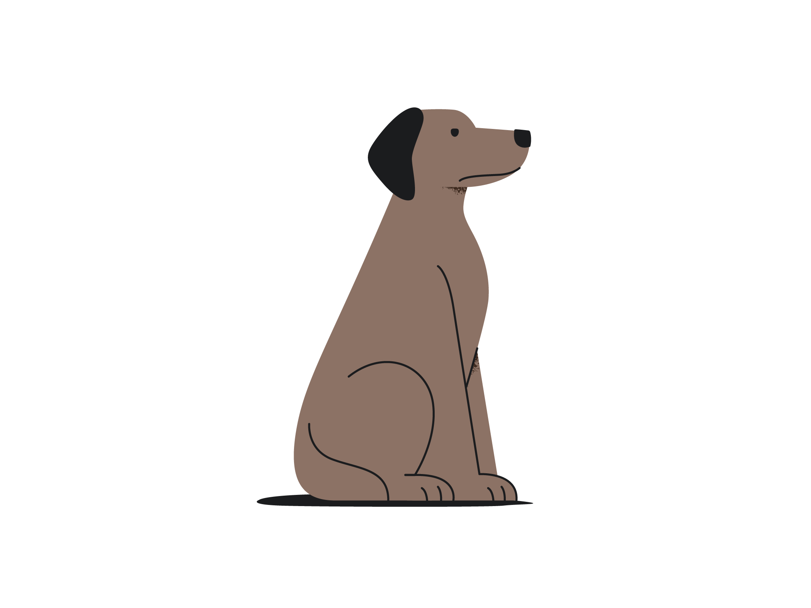
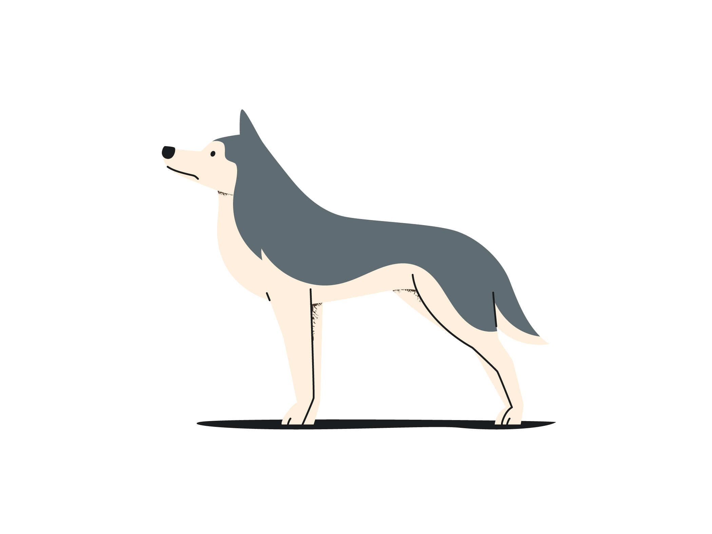

Who is this site for?
Anybody willing to volunteer some time to walk dogs. It could be for elderly people or someone with work commitments i.e. Drs & Nurses for example.

What is the goal of this site?
The goal is to connect dog owners with volunteers who are willing to walk their dogs in times when they themselves cannot.
How does it work?
Dog owners and volunteers in the Clonmel area can register their interest on the registration page.
